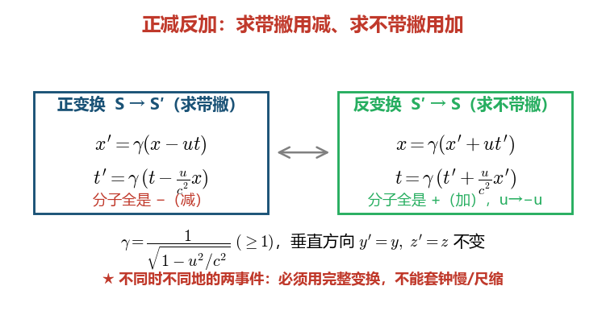
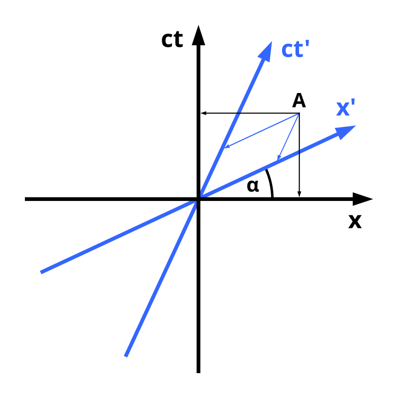
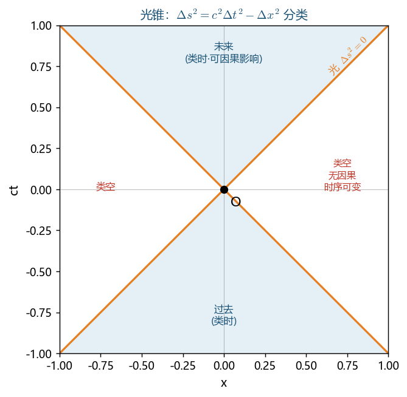
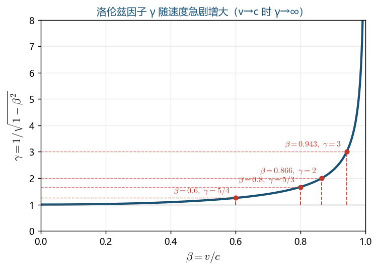

正变换（$S \to S'$）：
$$x' = \gamma(x-vt),\quad y'=y,\quad z'=z,\quad t' = \gamma\left(t-\frac{vx}{c^2}\right)$$逆变换（$S' \to S$）：将 $v$ 换成 $-v$
$$x = \gamma(x'+vt'),\quad t = \gamma\left(t'+\frac{vx'}{c^2}\right)$$其中 $\gamma = \frac{1}{\sqrt{1-\beta^2}},\quad \beta = v/c$

系统记录：同一个「正变换和反变换的关系、怎么推导」你在 5/22 一天内连问 3 次、5/19 还问过一次，弹出"第 4 次重复弱点"预警——说明公式形式记不牢、靠反复看才安心。下面这套口诀直接背死：
相对性原理：从 $S$ 看 $S'$ 往 $+x$ 跑，则从 $S'$ 看 $S$ 往 $-x$ 跑。所以反变换 = 正变换里对调带撇/不带撇 + 把 $u\to-u$。代进去 $-(-u)=+u$，减号自然变加号。顺推、逆推逻辑自洽，记不住公式时现推也来得及。
$\Delta\tau$ 为固有时间（原时，事件在"发生地"参考系测量的时间）。运动系测量的时间更长。
$L_0$ 为固有长度（物体在静止系中的长度）。垂直运动方向不收缩。
$\gamma = 1/\sqrt{1-0.998^2} \approx 15.8$
实验室寿命：$\Delta t = \gamma\tau_0 = 15.8\times2\times10^{-6} = 3.16\times10^{-5}\,\text{s}$
飞行距离：$d = 0.998c\times\Delta t \approx 9.47\,\text{km}$（经典预期仅 $\sim 600\,\text{m}$）
验证：当 $u_x'=c$ 时，$u_x = \frac{c+v}{1+v/c} = c$（光速不变）
静能：$E_0 = m_0c^2$
总能：$E = \gamma m_0 c^2 = E_k + E_0$
动能：$E_k = (\gamma-1)m_0c^2$
光子（$m_0=0$）：$E = pc$
$E_k = nm_0c^2$，$E = E_k + E_0 = (n+1)m_0c^2$
又 $E = \gamma m_0c^2$，故 $\gamma = n+1$
$v = c\sqrt{1-1/\gamma^2} = c\sqrt{1-\frac{1}{(n+1)^2}}$
由 $E^2 = (pc)^2 + (m_0c^2)^2$：
$p = \frac{1}{c}\sqrt{E^2-(m_0c^2)^2} = m_0c\sqrt{(n+1)^2-1} = m_0c\sqrt{n^2+2n}$
在所有惯性系中 $(\Delta s)^2$ 相同。
谁是固有量？关键看谁不动。
光子 $m_0=0$：$E=pc$ → $p=E/c$
等效质量（相对论质量）：$m=E/c^2=h\nu/c^2$
但光子没有静质量！$m_0=0$。
能量守恒：$2m_0c^2=2E_\gamma$ → $E_\gamma=m_0c^2=0.511\,\text{MeV}$
动量守恒：两光子方向相反（初态总动量为零）
$t_B'=\gamma(t_B-vx_B/c^2)=\gamma(0-vL/c^2)=-\gamma vL/c^2<0$
$t_A'=0$
所以在 $S'$ 中 $B$ 先于 $A$ 发生！同时性是相对的。

$E=E_k+E_0=2938\,\text{MeV}$
$\gamma=E/E_0=2938/938=3.13$
$v=c\sqrt{1-1/\gamma^2}=c\sqrt{1-1/9.80}=c\sqrt{0.898}=0.948c$
$p=\frac{1}{c}\sqrt{E^2-E_0^2}=\frac{1}{c}\sqrt{2938^2-938^2}\,\text{MeV}$
$=\frac{1}{c}\sqrt{8631844-879844}=\frac{1}{c}\sqrt{7752000}=2784\,\text{MeV}/c$
能量守恒：$E_\gamma+m_0c^2=\gamma m_0c^2$
$\gamma=1+E_\gamma/(m_0c^2)$
动量守恒：$E_\gamma/c=\gamma m_0 v$
$v=\frac{E_\gamma}{\gamma m_0 c}=\frac{E_\gamma c}{E_\gamma+m_0c^2}$
使用Lorentz变换时，首先明确：
$\beta = 0.6$，$\gamma = 1/\sqrt{1-0.36} = 1/\sqrt{0.64} = 1/0.8 = 1.25$
事件1（$x_1=0,\,t_1=0$）：
$x_1' = \gamma(x_1-vt_1) = 1.25\times(0-0) = 0$
$t_1' = \gamma(t_1-vx_1/c^2) = 1.25\times(0-0) = 0$
事件2（$x_2=3\times10^8\,\text{m},\,t_2=2\,\text{s}$）：
$x_2' = \gamma(x_2-vt_2) = 1.25\times(3\times10^8 - 0.6\times3\times10^8\times2)$
$= 1.25\times(3\times10^8 - 3.6\times10^8) = 1.25\times(-0.6\times10^8) = -0.75\times10^8\,\text{m}$
$t_2' = \gamma(t_2-vx_2/c^2) = 1.25\times\left(2 - \frac{0.6\times3\times10^8\times3\times10^8}{(3\times10^8)^2}\right)$
$= 1.25\times(2 - 0.6) = 1.25\times1.4 = 1.75\,\text{s}$
验证时空间隔不变性：
$S$ 系：$(\Delta s)^2 = c^2(\Delta t)^2 - (\Delta x)^2 = (3\times10^8)^2\times4 - (3\times10^8)^2 = 3\times(3\times10^8)^2$
$S'$ 系：$(\Delta s)^2 = c^2(1.75)^2 - (0.75\times10^8)^2 = (3\times10^8)^2\times3.0625 - 0.5625\times10^{16}$
$= 27.5625\times10^{16} - 0.5625\times10^{16} = 27\times10^{16} = 3\times(3\times10^8)^2$ ✓
$\gamma = 1.25$
(1) 空间站测飞船长度：
飞船相对空间站运动，飞船的长度发生收缩：
$$L_{飞船} = \frac{L_0}{\gamma} = \frac{100}{1.25} = 80\,\text{m}$$(2) 飞船测空间站长度：
空间站相对飞船运动，空间站的长度发生收缩：
$$L_{空间站} = \frac{L_0}{\gamma} = \frac{100}{1.25} = 80\,\text{m}$$关键理解：长度收缩是对称的！双方都认为对方变短了。这不矛盾——因为"同时测量两端坐标"在两个参考系中对应不同的事件（同时性的相对性）。
| 物理量 | 表达式 | 说明 |
|---|---|---|
| 静质量 | $m_0 = 0$ | 光子没有静质量 |
| 速度 | $v = c$（恒定） | 在任何参考系中都是 $c$ |
| 能量 | $E = h\nu = \frac{hc}{\lambda}$ | $h=6.626\times10^{-34}\,\text{J}\cdot\text{s}$ |
| 动量 | $p = \frac{E}{c} = \frac{h\nu}{c} = \frac{h}{\lambda}$ | 由 $E=pc$（$m_0=0$）得出 |
| 等效质量 | $m = \frac{E}{c^2} = \frac{h\nu}{c^2}$ | 引力效应中使用（光线弯曲） |
设散射后光子能量 $E_\gamma'$，电子总能 $E_e$，电子动量 $p_e$。
能量守恒：
$$E_\gamma + m_0c^2 = E_\gamma' + E_e$$ $$0.511 + 0.511 = E_\gamma' + E_e$$ $$E_\gamma' + E_e = 1.022\,\text{MeV} \quad \cdots(1)$$动量守恒（取初始光子方向为正，散射后光子反向）：
$$\frac{E_\gamma}{c} = -\frac{E_\gamma'}{c} + p_e$$ $$p_ec = E_\gamma + E_\gamma' = 0.511 + E_\gamma' \quad \cdots(2)$$由能量-动量关系 $E_e^2 = (p_ec)^2 + (m_0c^2)^2$：
从 (1)：$E_e = 1.022 - E_\gamma'$
从 (2)：$p_ec = 0.511 + E_\gamma'$
$$(1.022 - E_\gamma')^2 = (0.511 + E_\gamma')^2 + (0.511)^2$$ $$1.0449 - 2.044E_\gamma' + E_\gamma'^2 = 0.2611 + 1.022E_\gamma' + E_\gamma'^2 + 0.2611$$ $$1.0449 - 2.044E_\gamma' = 0.5222 + 1.022E_\gamma'$$ $$0.5227 = 3.066E_\gamma'$$ $$E_\gamma' = 0.1705\,\text{MeV}$$反冲电子动能：
$$E_k = E_e - m_0c^2 = (1.022 - 0.1705) - 0.511 = \boxed{0.3405\,\text{MeV}}$$光子损失了约 $2/3$ 的能量传递给了电子。
在核反应中，反应前后总质量发生变化（质量亏损 $\Delta m$），对应释放或吸收的能量为：
$$\boxed{\Delta E = \Delta m\cdot c^2}$$$1\,\text{u} = 1.6605\times10^{-27}\,\text{kg}$ 对应 $931.5\,\text{MeV}$。
反应方程：$^2_1\text{H} + ^3_1\text{H} \to ^4_2\text{He} + ^1_0n$
质量亏损：
$$\Delta m = (2.0141 + 3.0161) - (4.0026 + 1.0087) = 5.0302 - 5.0113 = 0.0189\,\text{u}$$释放能量：
$$\Delta E = 0.0189\times931.5\,\text{MeV} = \boxed{17.6\,\text{MeV}}$$这就是氢弹和可控核聚变的原理。每次聚变释放 $17.6\,\text{MeV}$，远超化学反应的 $\sim\text{eV}$ 量级。
19世纪末，经典物理学大厦看似完美，但有两个无法解释的实验事实：
| Galileo变换 | Lorentz变换 | |
|---|---|---|
| 适用范围 | $v\ll c$ | 任意速度 |
| 时间 | $t'=t$（绝对时间） | $t'=\gamma(t-vx/c^2)$ |
| 空间 | $x'=x-vt$ | $x'=\gamma(x-vt)$ |
| 速度合成 | $u'=u-v$ | $u'=\frac{u-v}{1-uv/c^2}$ |
| 对称性 | Newton定律协变 | Maxwell方程协变 |
当 $v/c\to 0$ 时，$\gamma\to 1$，Lorentz变换退化为Galileo变换——对应原理。
甲留在地球，乙乘宇宙飞船以接近光速往返旅行。按时间膨胀，乙回来时比甲年轻。但从乙的角度看，甲在运动，甲应该更年轻——矛盾？
解答：佯谬的关键在于乙经历了加速和减速（至少在出发、折返、返回时三次变速），乙不是始终处于惯性系中。严格分析需用广义相对论或逐段分析，结论：乙确实更年轻。
一根 $L_0$ 的杆以接近光速冲入长度为 $L_0$ 的车库。在车库系中，杆缩短了（$L=L_0/\gamma 解答：关键在"同时性的相对性"。"杆两端同时在车库内"这个事件，在不同参考系中的"同时"含义不同。不存在矛盾。
时空图是将事件表示在二维平面上的工具：横轴为空间坐标 $x$，纵轴为 $ct$（使得光的世界线为 $45°$ 直线）。
从任意事件 $O$ 出发，光沿 $\pm45°$ 方向传播，形成光锥：
两事件之间的时空间隔 $(\Delta s)^2 = c^2(\Delta t)^2 - (\Delta x)^2$ 是 Lorentz 不变量：
| 类型 | 条件 | 物理意义 | 时间顺序 |
|---|---|---|---|
| 类时间隔 | $(\Delta s)^2 > 0$ | 两事件可由低于光速的信号联系，存在因果关系 | 所有惯性系中顺序相同 |
| 类光间隔 | $(\Delta s)^2 = 0$ | 两事件恰好可由光信号联系 | 所有惯性系中顺序相同 |
| 类空间隔 | $(\Delta s)^2 < 0$ | 两事件无法由任何信号联系，无因果关系 | 不同惯性系中顺序可以不同 |
$c\Delta t = 3\times10^8\times1 = 3\times10^8\,\text{m}$
$\Delta x = 5\times10^8\,\text{m}$
$(\Delta s)^2 = (3\times10^8)^2 - (5\times10^8)^2 = (9-25)\times10^{16} = -16\times10^{16}\,\text{m}^2 < 0$
类空间隔！两事件之间不存在因果关系（即使A"先发生"，A也无法影响B，因为信号传播速度不可能超过光速）。
存在某个参考系使得两事件同时发生，也存在参考系使得B先于A发生。

能量-动量关系（Lorentz不变量）：
$$E^2 = (pc)^2 + (m_0c^2)^2$$等价形式：$(E/c)^2 - p^2 = (m_0c)^2$，此量在所有惯性系中相同。
对于光子（$m_0=0$）：$E = pc$
其中 $h = 6.626\times10^{-34}\,\text{J}\cdot\text{s}$ 为 Planck 常数。
光子虽然没有静质量，但有动量和能量，可以参与碰撞和反应。
思路：在阈值条件下，产物在质心系中全部静止（动能为零），总能量最小。
利用四动量不变量：$(E_{total}/c)^2 - p_{total}^2$ 在任何参考系中相同。
实验室系（靶质子静止）：
$E_{total} = E_{弹} + m_pc^2 = (E_k + m_pc^2) + m_pc^2 = E_k + 2m_pc^2$
$p_{total} = p_{弹}$，由 $E_{弹}^2 = (p_{弹}c)^2 + (m_pc^2)^2$ 得
$p_{弹}^2c^2 = E_{弹}^2 - (m_pc^2)^2 = (E_k+m_pc^2)^2 - (m_pc^2)^2 = E_k^2 + 2E_km_pc^2$
质心系（阈值时产物全部静止）：
$E_{cm} = 2m_pc^2 + m_\pi c^2$，$p_{cm} = 0$
不变量相等：
$$E_{total}^2 - p_{total}^2c^2 = E_{cm}^2$$ $$(E_k + 2m_pc^2)^2 - (E_k^2 + 2E_km_pc^2) = (2m_pc^2 + m_\pi c^2)^2$$ $$4(m_pc^2)^2 + 4E_km_pc^2 + E_k^2 - E_k^2 - 2E_km_pc^2 = (2m_pc^2+m_\pi c^2)^2$$ $$4(m_pc^2)^2 + 2E_km_pc^2 = (2m_pc^2+m_\pi c^2)^2$$ $$E_k = \frac{(2m_pc^2+m_\pi c^2)^2 - 4(m_pc^2)^2}{2m_pc^2}$$代入数值：
$$E_k = \frac{(2\times938.3+135.0)^2 - 4\times938.3^2}{2\times938.3} = \frac{2011.6^2 - 4\times938.3^2}{1876.6}$$ $$= \frac{4046535 - 3521628}{1876.6} = \frac{524907}{1876.6} \approx \boxed{279.7\,\text{MeV}}$$阈值动能约为 $\pi^0$ 静能的 $2$ 倍多——因为需要同时满足能量和动量守恒。
为什么不能只产生一个光子？
初态总动量为零（两粒子均静止），末态动量也必须为零。
一个光子的动量 $p = E/c \neq 0$，因此单个光子无法满足动量守恒。
至少需要两个方向相反的光子，使总动量为零。
两光子能量：
能量守恒：$2m_ec^2 = 2E_\gamma$
$$E_\gamma = m_ec^2 = \boxed{0.511\,\text{MeV}}$$两个光子方向相反，各自能量 $0.511\,\text{MeV}$，对应波长：
$$\lambda = \frac{hc}{E_\gamma} = \frac{1240\,\text{eV}\cdot\text{nm}}{0.511\times10^6\,\text{eV}} \approx 0.00243\,\text{nm}$$这是硬 $\gamma$ 射线，正电子湮灭辐射在PET（正电子发射断层扫描）医学成像中有重要应用。
低速极限（$v\ll c$，$\gamma\approx 1+\frac{1}{2}\beta^2$）：
$$E_k \approx \frac{1}{2}m_0v^2 \quad \text{（经典动能）}$$| 条件 | $\gamma$ | $v/c$ |
|---|---|---|
| $E_k = m_0c^2$（动能=静能） | $2$ | $\frac{\sqrt{3}}{2} \approx 0.866$ |
| $E_k = 2m_0c^2$ | $3$ | $\frac{2\sqrt{2}}{3} \approx 0.943$ |
| $E_k = 3m_0c^2$ | $4$ | $\frac{\sqrt{15}}{4} \approx 0.968$ |
| $E_k = 9m_0c^2$ | $10$ | $\frac{\sqrt{99}}{10} \approx 0.995$ |
可以看到，随着动能增加，速度越来越接近 $c$ 但永远达不到 $c$。
$\beta = 0.9$，$\gamma = \frac{1}{\sqrt{1-0.81}} = \frac{1}{\sqrt{0.19}} \approx 2.294$
所需动能：
$$E_k = (\gamma-1)m_pc^2 = (2.294-1)\times938.3\,\text{MeV} = 1.294\times938.3 \approx \boxed{1214\,\text{MeV}}$$这已经是质子静能的 $1.29$ 倍。经典力学预测只需 $\frac{1}{2}m_pv^2 = \frac{1}{2}\times0.81\times938.3 = 380\,\text{MeV}$，严重低估！
释放的能量来自质量亏损：
$$\Delta E = \Delta m\cdot c^2 = 17.6\,\text{MeV}$$对应质量亏损：$\Delta m = 17.6/931.5 \approx 0.0189\,\text{u}$
反应前总质量：$2.0141 + 3.0161 = 5.0302\,\text{u}$
反应后总质量：$4.0026 + 1.0087 = 5.0113\,\text{u}$
差值：$5.0302 - 5.0113 = 0.0189\,\text{u}$ ✓
质量亏损占总质量的 $0.0189/5.0302 \approx 0.38\%$，虽然比例很小，但释放的能量巨大。
| $v/c$ | $\gamma$ | $E_k/m_0c^2$ |
|---|---|---|
| $0.1$ | $1.005$ | $0.005$ |
| $0.3$ | $1.048$ | $0.048$ |
| $0.5$ | $1.155$ | $0.155$ |
| $0.8$ | $1.667$ | $0.667$ |
| $0.9$ | $2.294$ | $1.294$ |
| $0.95$ | $3.203$ | $2.203$ |
| $0.99$ | $7.089$ | $6.089$ |
| $0.999$ | $22.37$ | $21.37$ |
| $0.9999$ | $70.71$ | $69.71$ |

| 错误类型 | 具体表现 | 正确做法 |
|---|---|---|
| 搞反运动关系 | 把静止系当成运动系 | 判断"谁看谁在动"，运动是相对的 |
| 混淆固有量 | 把坐标时间当固有时间 | 固有时间：同一地点的两事件；坐标时间：不同地点的两事件 |
| 忘记收缩方向 | 垂直方向也做收缩 | 长度收缩只在运动方向上发生，垂直方向不变 |
| 公式用反 | $\Delta t = \Delta\tau/\gamma$ | 运动钟变慢：$\Delta t = \gamma\Delta\tau$，即 $\Delta t > \Delta\tau$ |
$\gamma = \frac{1}{\sqrt{1-0.998^2}} = \frac{1}{\sqrt{1-0.996}} = \frac{1}{\sqrt{0.004}} = \frac{1}{0.0632} \approx 15.8$
视角一：地面观测者
$\mu$ 子在运动，其"生命时钟"变慢：
$$\tau = \gamma\tau_0 = 15.8\times2.2\,\mu\text{s} \approx 34.8\,\mu\text{s}$$在地面系中 $\mu$ 子飞行距离：
$$d = v\tau = 0.998\times3\times10^8\times34.8\times10^{-6} \approx 10.4\,\text{km}$$大气层厚度约 $10\sim15\,\text{km}$，$\mu$ 子可以到达地面。
视角二：$\mu$ 子自身参考系
$\mu$ 子认为自己是静止的，寿命就是固有寿命 $\tau_0 = 2.2\,\mu\text{s}$。
但大气层（相对 $\mu$ 子运动）发生长度收缩：
$$d' = \frac{d}{\gamma} = \frac{10.4}{15.8} \approx 0.66\,\text{km}$$$\mu$ 子在 $2.2\,\mu\text{s}$ 内飞行距离：$v\tau_0 = 0.998c\times2.2\,\mu\text{s} \approx 0.66\,\text{km}$
两种视角给出相同结论：$\mu$ 子能穿越收缩后的大气层到达地面。
经典力学预测（对比）：$d_{经典} = v\tau_0 = 0.998c\times2.2\,\mu\text{s} \approx 660\,\text{m}$，远小于大气层厚度，$\mu$ 子不应到达地面——这与实验观测矛盾，证明相对论效应的真实存在。
$\gamma = 1/\sqrt{1-0.64} = 1/0.6 = 5/3$
方法一：在飞船系中，空间站在运动，长度收缩为 $L = L_0/\gamma = 500/(5/3) = 300\,\text{m}$。飞船经过空间站的时间为：
$$\Delta t_{飞船} = \frac{L}{v} = \frac{300}{0.8\times3\times10^8} = 1.25\times10^{-6}\,\text{s} = 1.25\,\mu\text{s}$$方法二：在空间站系中，飞船经过的时间为 $\Delta t_{站} = L_0/v = 500/(0.8c) = 2.083\,\mu\text{s}$。飞船上的时钟是"运动的钟"，走得慢，所以飞船上记录的时间（固有时间）为：
$$\Delta t_{飞船} = \frac{\Delta t_{站}}{\gamma} = \frac{2.083}{5/3} = 1.25\,\mu\text{s}$$结果一致 ✓
两种方法结果一致。注意这里飞船上记录的是固有时间（"经过前端"和"经过后端"发生在飞船上的同一位置）。
地面系 $S$：$\Delta x = x_2 - x_1 = 100\,\text{m}$，$\Delta t = t_2 - t_1 = 0.125\times10^{-6}\,\text{s}$（B比A晚 $0.125\,\mu\text{s}$）
火车系 $S'$：用Lorentz变换
$$\Delta t' = \gamma\!\left(\Delta t - \frac{u\,\Delta x}{c^2}\right)$$$\gamma = 1/\sqrt{1-0.36} = 1.25$
$$\Delta t' = 1.25\times\!\left(0.125\times10^{-6} - \frac{0.6c\times100}{c^2}\right) = 1.25\times\!\left(0.125\times10^{-6} - \frac{0.6\times100}{3\times10^8}\right)$$ $$= 1.25\times(0.125\times10^{-6} - 0.2\times10^{-6}) = 1.25\times(-0.075\times10^{-6}) \approx -0.1\,\mu\text{s}$$$\Delta t' < 0$，说明在车上看来 B先开枪，比A早约 $0.1\,\mu\text{s}$。
物理讨论：这两个事件（A开枪、B开枪）之间的时空间隔为类空的（$|\Delta x| > c|\Delta t|$），因此它们之间没有因果关系，不同参考系中时间顺序可以不同，这并不矛盾。
设 $S'$ 相对 $S$ 以速度 $u$ 沿 $x$ 轴正向运动。由Lorentz逆变换：
$$x' = \gamma(x - ut), \quad y' = y, \quad z' = z$$代入 $x'^2 + y'^2 = a^2$：
$$\gamma^2(x - ut)^2 + y^2 = a^2$$ $$\frac{(x - ut)^2}{a^2/\gamma^2} + \frac{y^2}{a^2} = 1$$这是一个以 $(ut, 0)$ 为中心的椭圆，半长轴 $a$（沿 $y$），半短轴 $a/\gamma = a\sqrt{1-u^2/c^2}$（沿 $x$）。
椭圆中心以速度 $u$ 沿 $x$ 方向移动。这就是长度收缩的几何表现：运动方向上的尺寸缩短了 $\gamma$ 倍。
错误解法（直接用长度收缩和时间膨胀）：
跑道收缩：$l = l_0\sqrt{1-u^2/c^2}$，时间膨胀：$t = t_0/\sqrt{1-u^2/c^2}$？ 不对！
运动员起跑和到终点是不同时不同地的两个事件，既不满足长度收缩的条件（需要同时测量两端），也不满足时间膨胀的条件（需要同地点发生）。
正确解法（必须用完整的Lorentz变换）：
地面系 $S$：$\Delta x = l_0 = 100\,\text{m}$，$\Delta t = t_0 = 10\,\text{s}$
飞船系 $S'$（$\gamma \approx 5.025$）：
$$\Delta x' = \gamma(\Delta x - u\,\Delta t) = 5.025\times(100 - 0.98\times3\times10^8\times10) \approx -1.47\times10^{10}\,\text{m}$$ $$\Delta t' = \gamma\!\left(\Delta t - \frac{u\,\Delta x}{c^2}\right) = 5.025\times\!\left(10 - \frac{0.98c\times100}{c^2}\right) \approx 50.25\,\text{s}$$跑过的距离巨大（因为在飞船看来，运动员随地面一起高速运动），时间也不是简单的膨胀关系。
注意：地球上接收到的时间间隔 $T_{接收}$ 不等于地球系中测得的发射间隔 $\Delta t$！因为星体在远离，后一个光脉冲要比前一个多走一段距离。
星体系中两次闪光发生在同一地点，时间间隔为固有时间 $\tau_0$。
地球系中闪光间隔 $\Delta t = \gamma\tau_0$。在此期间星体远离了 $u\,\Delta t$，第二个光脉冲还要多走 $u\,\Delta t$ 的距离。
$$T_{接收} = \Delta t + \frac{u\,\Delta t}{c} = \Delta t\!\left(1+\frac{u}{c}\right) = \gamma\tau_0\!\left(1+\frac{u}{c}\right)$$ $$\tau_0 = \frac{T_{接收}}{\gamma(1+u/c)} = T_{接收}\sqrt{\frac{1-u/c}{1+u/c}} = 5\times\sqrt{\frac{0.2}{1.8}} = 5\times\frac{1}{3} = \frac{5}{3}\,\text{昼夜}$$这就是相对论多普勒效应（红移）的体现。
在地面系中，火箭长度收缩为 $l = l_0\sqrt{1-u^2/c^2}$。
光先到达尾部反射镜，剩余的光继续前进到达头部反射镜。在两次反射之间，光需要走过火箭长度加上火箭在此时间内运动的距离。
设两次反射的时间差为 $\delta$，则 $c\delta = l + u\delta$，解得 $\delta = l/(c-u)$。
地面收到两束反射光的时间差：
$$\Delta T = \frac{2l_0}{c}\cdot\frac{\sqrt{1-u^2/c^2}}{1-u/c} \cdot \frac{1}{1+u/c} \cdot ...$$经过详细计算（PPT用固有长度 $l_0 = 600\,\text{m}$ 和 $\Delta T$ 的关系），解得 $u = 0.9c$。
验证：固有时间 $\delta_0 = l_0/c = 600/(3\times10^8) = 2\times10^{-6}\,\text{s}$。
取地球为 $S$ 系，B为 $S'$ 系。$S'$ 相对 $S$ 的速度 $u = -0.6c$（沿 $x$ 轴负向）。
A在 $S$ 系中：$v_x = 0$，$v_y = 0.8c$。
A相对 $S'$（即相对B）的速度：
$$v_x' = \frac{v_x - u}{1 - uv_x/c^2} = \frac{0-(-0.6c)}{1-0} = 0.6c$$ $$v_y' = \frac{v_y\sqrt{1-u^2/c^2}}{1-uv_x/c^2} = \frac{0.8c\times\sqrt{1-0.36}}{1} = 0.8c\times0.8 = 0.64c$$A相对B的速度大小：
$$v' = \sqrt{v_x'^2+v_y'^2} = \sqrt{(0.6c)^2+(0.64c)^2} = c\sqrt{0.36+0.4096} = 0.88c$$方向与 $x'$ 轴夹角：$\tan\theta' = v_y'/v_x' = 0.64/0.6 = 1.07$，$\theta' \approx 46.8°$。
注意：$v_y$ 分量在变换后也发生了变化（从 $0.8c$ 变为 $0.64c$），这是相对论速度变换的特点——垂直方向的速度分量也受影响（与经典力学不同）。
取A尺为 $S$ 系，地面为 $S'$ 系（$S'$ 以 $u=0.6c$ 相对 $S$ 向右运动）。B尺在 $S'$ 中以 $v'_{Bx}=0.6c$ 向右运动。
用速度变换求B相对A的速度：
$$v_{Bx} = \frac{v'_{Bx}+u}{1+uv'_{Bx}/c^2} = \frac{0.6c+0.6c}{1+0.36} = \frac{1.2c}{1.36} = 0.88c$$然后用长度收缩公式：
$$l = l_0\sqrt{1-v_{Bx}^2/c^2} = 1\times\sqrt{1-0.88^2} = \sqrt{1-0.7744} = \sqrt{0.2256} \approx 0.47\,\text{m}$$关键：不能简单地认为速度是 $0.6c + 0.6c = 1.2c$！必须用相对论速度合成。